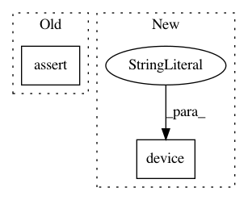

e302434106d43d9f38a0360211421bc468b9291d,test/test_functional_filtering.py,TestFunctionalFiltering,test_lfilter_basic,#TestFunctionalFiltering#,15
Before Change
a_coeffs = torch.tensor([1, 0, 0, 0], dtype=torch.float32)
output_waveform = F.lfilter(waveform, a_coeffs, b_coeffs)
assert torch.allclose(
waveform[:, 0:-3], output_waveform[:, 3:], atol=1e-5
)
def test_lfilter(self):
Design an IIR lowpass filter using scipy.signal filter design
After Change
assert torch.allclose(waveform[:, 0:-3], output_waveform[:, 3:], atol=1e-5)
def test_lfilter_basic(self):
self._test_lfilter_basic(torch.float32, torch.device("cpu"))
def test_lfilter_basic_double(self):
self._test_lfilter_basic(torch.float64, torch.device("cpu"))
In pattern: SUPERPATTERN
Frequency: 3
Non-data size: 2
Instances
Project Name: pytorch/audio
Commit Name: e302434106d43d9f38a0360211421bc468b9291d
Time: 2019-09-19
Author: engineerchuan@gmail.com
File Name: test/test_functional_filtering.py
Class Name: TestFunctionalFiltering
Method Name: test_lfilter_basic
Project Name: pytorch/audio
Commit Name: e302434106d43d9f38a0360211421bc468b9291d
Time: 2019-09-19
Author: engineerchuan@gmail.com
File Name: test/test_functional_filtering.py
Class Name: TestFunctionalFiltering
Method Name: test_lfilter
Project Name: dmlc/dgl
Commit Name: 8531ee6aa65eeeea9729e0442a150fcc7e629b35
Time: 2020-06-10
Author: classicxsong@gmail.com
File Name: examples/pytorch/deepwalk/deepwalk.py
Class Name: DeepwalkTrainer
Method Name: init_device_emb